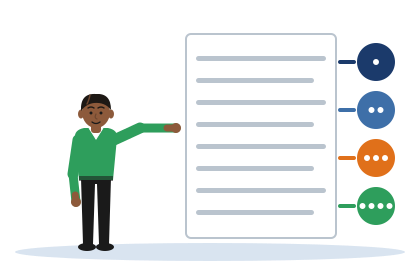

Four Rounds
[Illustrative example - do not cite] The methodology passage is invented for practice. It is the passage from Section 4.5 of the notes.
One idea
A methodology is judged in four rounds: the method, the tools, the evaluation, and then the one edit. Asking one question at a time shows you what a single reading hides.
